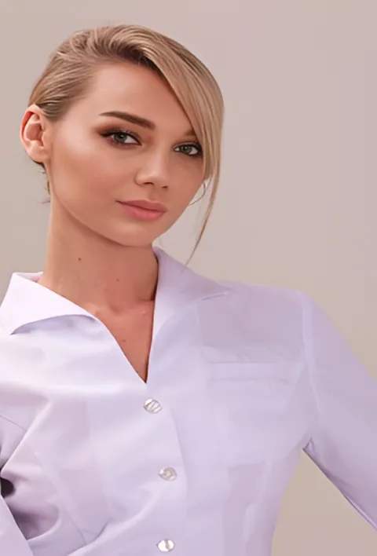
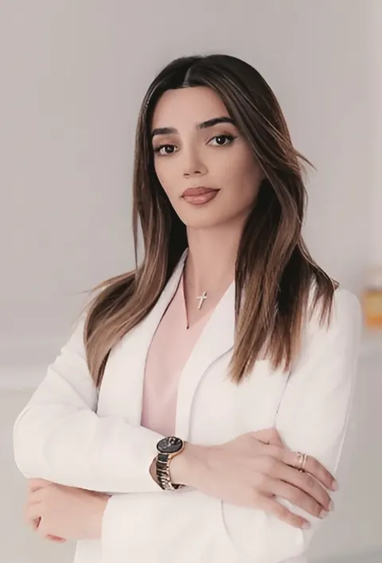
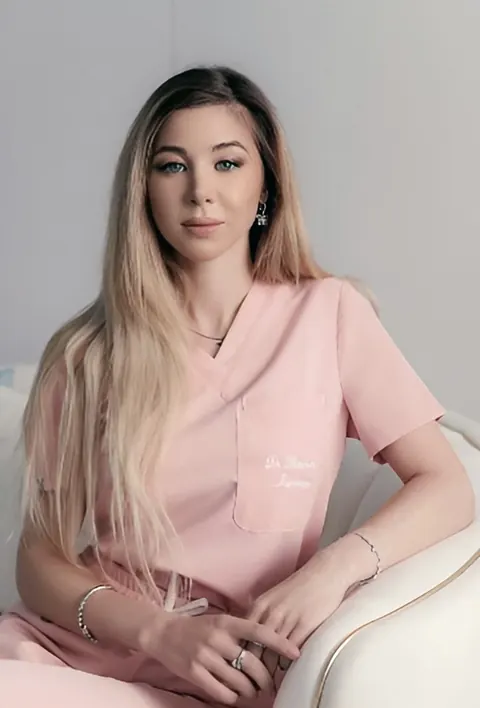
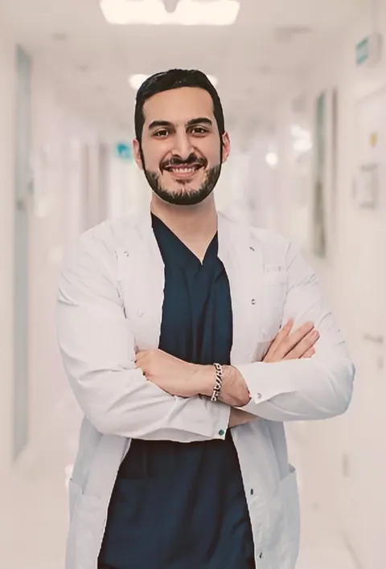
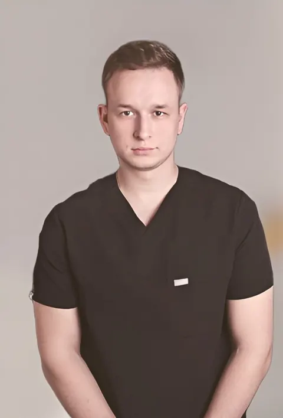

Команда
Специалисты клиники
Восемь хирургов, каждый со своей специализацией. Команду собрала и обучила авторским протоколам основатель клиники Анастасия Борисенко
Специализация
Найдено врачей: 8
Хирурги

АнастасияПластический хирург, основатель клиникиСтаж 19 лет
ЕленаПластический хирург, косметолог, дерматовенерологСтаж 16 лет
СергейПластический хирург, трихотрансплантологСтаж 8 лет
НинаПластический хирургСтаж 4 года
Нушик РоландовнаПластический и реконструктивный хирург, трихотрансплантологСтаж 5 лет
Анастасия ОлеговнаПластический хирург, трихотрансплантологСтаж 3 года
Альшейх ЮсифПластический хирург, косметолог-эстетистСтаж 3 года
Илья РомановичПластический хирург, трихотрансплантологСтаж 4 года


Врачей по этой специализации пока нет.
Анастасия БорисенкоО первой консультации — за минуту
Первый шаг к
желаемому результату
Координатор заботы подберёт хирурга
и удобное время.
Спасибо!
Заявка отправлена. Координатор свяжется с вами в ближайшее время.